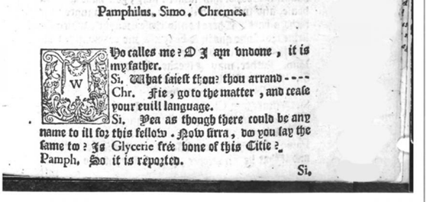

YAA - Chương 1 (2)
1
Một phát minh 500 năm tuổi mà ngày nay chúng ta vẫn có thể sử dụng
Trong ngữ pháp, cái dấu ba chấm ấy được gọi là dấu chấm lửng.
Tiến sĩ Anne Toner là giảng viên đại học của trường Cambridge – người đã dành nhiều năm để nghiên cứu về lịch sử của dấu chấm lửng. Không, tôi không đùa đâu. Nhưng tin tốt đây. Bà ấy đã tìm thấy nó! Vâng, lần đầu tiên cái dấu chấm lửng nổi tiếng kia xuất hiện là vào năm 1588 trong bản dịch từ tiếng Lã Mã sang tiếng Anh của vở kịch Andria của nhà soạn kịch Terence[1].
Ta hãy dừng lại một chút để cùng ngắm nhìn bản thư pháp hơi mờ đến từ nửa thiên niên kỷ trước. Dấu chấm lửng đầu tiên[2] trên thế giới. Hỡi những người anh em yêu thích lịch sử và đam mê đồ cổ, hãy lật sang trang tiếp theo để quan sát cái vật hóa thạch kỳ diệu này…

Trông cứ như là mấy củ khoai tây nhỏ ấy, nhỉ? Ồ, hãy thử xem chúng ta có thể tạo ra một dấu câu mới mà cả thế giới sẽ sử dụng nó trong năm trăm nữa hay không nhé. Việc này thật chẳng dễ chút nào. Nhưng chúng ta có sự giúp đỡ rồi đây. Ben Jonson[3] bắt đầu sử dụng nó trong những vở kịch của mình ngay sau đó và rồi thi sĩ già Bill Shakespeare[4] tham gia vào cuộc chơi. Bùm! Điều này tương đương với việc bài viết của bạn được Oprah[5] retweet[6] vào thời Trung cổ ấy. Dấu chấm lửng sau đấy đã đi cả một chặng đường dài từ đó tới Virginia Woolf[7] và Joseph Conrad[8]. Ngày nay, ngay cả Adele[9] cũng sử dụng dấu chấm lửng khi nhá hàng vài đoạn hợp âm đầu tiên trong album của mình trong một quảng cáo trên TV.
Tôi không đùa đâu, Tiến sĩ Toner thậm chí đã viết cả một cuốn sách về dấu chấm lửng có tựa đề Ellipsis in English Literature: Signs of Omission[10] và trong đó bà viết rằng dấu chấm lửng là “một kiến tạo khác thường.” Không một vở kịch nào được in trước đấy… biểu thị những câu chưa hoàn thành theo cách này.”
Những câu chưa hoàn thành?
Còn thứ gì khác được xem là một câu chưa hoàn thành không nhỉ?
Câu trả lời là tất cả mọi thứ.
Mọi việc bạn làm, mọi con đường bạn đi, mọi căn bệnh mà bạn được chẩn đoán, mọi bức tường mà bạn va phải, mọi sự thoái trào, mọi sự thất bại, mọi lời từ chối. Tất cả những trải nghiệm này đều là một phần của một câu chưa hoàn thành trong câu chuyện về cuộc đời bạn.
Đôi khi điều tốt nhất mà bạn có thể làm là học cách để thêm vào đó một dấu ba chấm… và tiếp tục tiến bước.
[1] Publius Terentius Afer, hay Terence, là nhà viết kịch nổi tiếng gốc Bắc Phi ở Cộng hòa La Mã. Ông sinh ra vào khoảng năm 195 TCN tại Carthage và ban đầu được đưa đến Rome như một người nô lệ. Tuy nhiên, tài năng của Terence cuối cùng đã giúp ông được giải thoát, và ông đã tiếp tục viết sáu vở kịch riêng biệt. Terence được cho là đã chết khi còn trẻ, trên đường trở về La Mã hoặc ở Hy Lạp. Cái chết của ông được cho là xảy ra vào khoảng năm 159 trước Công nguyên. Vở Người phụ nữ của Andros (The Woman of Andros), được biên soạn vào năm 166 TCN với tên gọi Andria, nó cũng đã được dịch là Cô gái Andrian. Terence đã chuyển thể nó từ vở kịch Hy Lạp Andria của Menander và tham khảo thêm từ vở Perinthia của Menander (Cô gái vùng Perinthian). Người phụ nữ của Andros của Terence là nền tảng của một số tác phẩm sau này, bao gồm vở kịch Những người yêu có ý thức của Sir Richard Steele (1723) và tiểu thuyết Người phụ nữ của Andros của Thornton Wilder (1930).
[2] https://www.cam.ac.uk/research/features/dot-dot-dot-how-the-ellipsis-made-its-mark
[3] Ben Jonson (tên đầy đủ: Benjamin Jonson, 11/6/1572 – 6/8/1637) – nhà viết kịch, nhà thơ Anh. Cùng với William Shakespeare và Christopher Marlowe, được coi là một trong những nhà viết kịch vĩ đại nhất của thời đại Elizabeth.
[4] chỉ William Shakespeare (không rõ ngày sinh của ông, nhưng theo truyền thống được ghi nhận là vào ngày 23/4/1564, ngày thánh George; mất ngày 23/4/1616 theo lịch Julian hoặc ngày 3/5/1616 theo lịch Gregorius) là một nhà văn và nhà viết kịch Anh, được coi là nhà văn vĩ đại nhất của Anh và là nhà viết kịch đi trước thời đại. Ông cũng được vinh danh là nhà thơ tiêu biểu của nước Anh và là “Thi sĩ của dòng sông Avon” (Avon là dòng sông ở quê hương Shakespeare, Stratford-upon-Avon). Những tác phẩm của ông, bao gồm cả những tác phẩm hợp tác, bao gồm 38 vở kịch, 154 bản sonnet, hai bản thơ tường thuật dài, và 104 bài thơ ngắn. Những vở kịch của ông đã được dịch ra thành rất nhiều ngôn ngữ lớn và được trình diễn nhiều hơn bất kì nhà viết kịch nào. Wikipedia
[5] Oprah Gail Winfrey (tên khai sinh Orpah Gail Winfrey; sinh ngày 29/1/1954) là nữ giám đốc truyền thông, diễn viên, người dẫn chương trình trò chuyện, nhà sản xuất truyền hình và nhà từ thiện người Mỹ. Bà được biết đến với chương trình trò chuyện The Oprah Winfrey Show, đây là chương trình truyền hình được đánh giá cao nhất trong lịch sử và được phát sóng trên toàn quốc trong vòng 25 năm liên tục, từ năm 1986 đến 2011 từ Chicago. Được mệnh danh là “Nữ hoàng của mọi phương tiện truyền thông”, bà là người Mỹ gốc Phi giàu nhất thế kỷ 20 và là tỷ phú da đen đầu tiên của Bắc Mỹ, cũng như được đánh giá là nhà từ thiện da đen vĩ đại nhất trong lịch sử nước Mỹ. Đến năm 2007, trong một vài thời điểm, bà cũng được đánh giá là người phụ nữ có ảnh hưởng nhất trên thế giới. Wikipedia
[6] retweet: thuật ngữ dành cho mạng xã hội Twitter, có nghĩa là bạn có thể đăng lại Tweet của họ hoặc thêm vào bình luận của riêng bạn.
[7] Virginia Woolf (tên thời con gái Stephen) (25/1/1882 – 28/3/1941) là một tiểu thuyết gia và là một nhà văn tiểu luận người Anh, bà được coi là một trong những nhân vật văn học hiện đại lừng danh nhất thế kỉ 20. Trong suốt thời gian giữa chiến tranh, Woolf là một nhân vật có tầm ảnh hưởng của xã hội văn học London và là một thành viên của Bloomsbury Group. Những tác phẩm nổi tiếng nhất của bà bao gồm Đêm và ngày (Night and Day, 1919), Căn phòng của Jacob (Jacob’s Room, 1922), Bà Dalloway (Mrs.Dalloway, 1925), Đến ngọn hải đăng (To the Lighthouse, 1927), Orlando (1928), Một căn phòng riêng (A Room of One’s Own, 1929), Những đợt sóng (The Waves, 1931), Ba đồng tiền vàng (Three Guineas, 1938). Wikipedia
[8] Joseph Conrad (tên khai sinh Józef Teodor Konrad Korzeniowski; 3/12/1857 – 3/8/1924) là một nhà văn Ba Lan chuyên viết tác phẩm bằng tiếng Anh sau khi ông chuyển đến định cư tại Anh. Ông được cấp quốc tịch Anh vào năm 1886, nhưng vẫn luôn coi mình là một người Ba Lan. Conrad được coi là một trong những tiểu thuyết gia vĩ đại nhất trong của Anh, mặc dù ông không nói được ngôn ngữ này trôi chảy cho đến tận khi ông đã hai mươi tuổi (và thậm chí luôn nói với một giọng không chuẩn). Ông chuyên viết truyện và tiểu thuyết, thường có một bối cảnh biển cả, trong đó mô tả các thử thách của tinh thần con người ở giữa một vũ trụ thờ ơ. Ông là một bậc thầy trong việc tạo tổng thể văn xuôi, người mang lại những cảm xúc bi kịch từ một nền văn học không phải tiếng Anh vào văn học Anh. Wikipedia
[9] Adele Laurie Blue Adkins (5/5/1988), được biết đến nhiều hơn với cái tên ngắn gọn là Adele, là một ca sĩ, nhạc sĩ người Anh. Adele được đề nghị ký hợp đồng thu âm với hãng thu âm XL Recordings sau khi một người bạn của Adele đăng một bản demo của cô lên Myspace vào năm 2006. Năm tiếp theo cô nhận giải “Sự lựa chọn của Nhà phê bình” trong lễ trao giải Brit Awards và đoạt giải Sound of 2008 của kênh BBC. Album đầu tay của cô, 19 được phát hành vào năm 2008 với nhiều thành công cả về thương mại lẫn các ý kiến phê bình tại Anh. 19 được chứng nhận đĩa bạch kim bốn lần tại Anh Quốc và hai đĩa bạch kim tại Hoa Kỳ. Sự nghiệp của cô tại Mỹ thăng tiến mạnh mẽ sau sự xuất hiện của cô trong chương trình Saturday Night Live vào cuối năm 2008. Tại lễ trao giải Grammy năm 2009, Adele đã nhận được giải Nghệ sĩ mới xuất sắc nhất và Trình diễn giọng Pop nữ xuất sắc nhất. Wikipedia
[10] Tạm dịch: Dấu Chấm Lửng Trong Văn Học Anh: Dấu Hiệu Của Sự Chưa Hoàn Thành
Comments